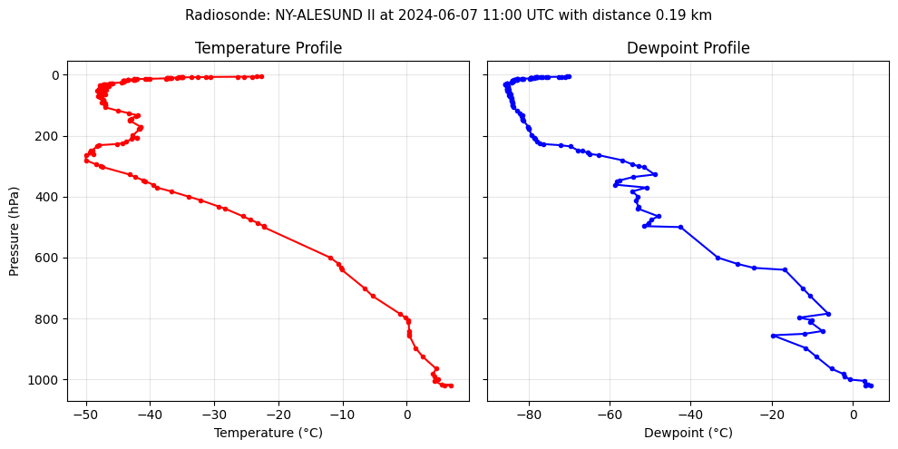

Radiosonde atmosphere generator#
RadiosondeAtmosphereGenerator downloads a radiosonde profile from the IGRA archive and writes it as a libRadtran atmosphere file. It needs the optional siphon package and network access.
How it works#
The generator:
Downloads the global IGRA v2 station list from NOAA/NCEI
Finds the closest active radiosonde stations to your target location using the Haversine formula
Queries the IGRA database (via the Siphon library) for the nearest available sounding in time
Converts the sounding (pressure, temperature, dewpoint) into a libRadtran
radiosondeatmosphere file
The output file has the columns p (hPa), T (K), H₂O (RH %), sorted from top of atmosphere to surface.
Note
Retrieving data from IGRA can take a few minutes when the archive is slow. IGRA data typically lag by a few weeks to months. If an InputGenerationError says no data was found, try an older date.
Requirements#
Install siphon, an optional dependency of pyRadtran:
pip install siphon
# or
conda install -c conda-forge siphon
# or
micromamba install siphon
# Check that siphon is installed
try:
from siphon.simplewebservice.igra2 import IGRAUpperAir
print("siphon is available ✓")
except ImportError:
raise ImportError(
"siphon is required for the radiosonde generator. "
"Install it with: pip install siphon"
)
# Set up logging
import logging
logging.basicConfig(level=logging.INFO)
logging.getLogger("pyradtran").setLevel(logging.INFO)
siphon is available ✓
Example 1: one-step file generation#
RadiosondeAtmosphereGenerator.create_radiosonde_atmosphere_file() takes a target time and location, finds the closest station and sounding, and writes the file.
from datetime import datetime
from pathlib import Path
from pyradtran.io import RadiosondeAtmosphereGenerator
# Target: Ny-Ålesund, Svalbard
lat, lon = 78.925, 11.922
# Create the atmosphere file in one step
atm_path = RadiosondeAtmosphereGenerator.create_radiosonde_atmosphere_file(
time=datetime(2024, 6, 7, 12), # use a date that is well in the past for IGRA availability
latitude=lat,
longitude=lon,
output_filepath="work/sonde_nya.dat",
)
print(f"Atmosphere file created at: {atm_path}")
INFO:pyradtran.io:Found sounding for NY-ALESUND II at 2024-06-07 11:00 UTC with distance 0.19 km
INFO:pyradtran.io:Created radiosonde atmosphere file: work/sonde_nya.dat
Atmosphere file created at: work/sonde_nya.dat
Inspect the generated file#
libRadtran reads this text file through the radiosonde input option. Each row is one pressure level with pressure (hPa), temperature (K) and relative humidity (%), from the top down.
The header names the station, the launch time and the distance from the target; check it before you use a profile. Here it is the Ny-Ålesund sounding launched at 11 UTC, 0.19 km from the target. The search accepts launches off the nominal 00/12 UTC times, so a station that launches at 11 UTC is not skipped in favour of one farther away.
# Header and the lowest levels of the generated file
lines = Path("work/sonde_nya.dat").read_text().splitlines()
header = [l for l in lines if l.startswith('#')]
data = [l for l in lines if not l.startswith('#')]
print("\n".join(header))
print(f"... {len(data)} levels; lowest ten:")
print("\n".join(data[-10:]))
# Radiosonde atmosphere profile
# NY-ALESUND II at 2024-06-07 11:00 UTC with distance 0.19 km
# p(hPa) T(K) h2o(RH%)
... 154 levels; lowest ten:
896.74 274.55 37.348
925.00 275.65 42.412
964.51 277.75 48.637
981.79 277.25 63.059
988.62 277.55 62.667
1000.00 278.05 66.577
1004.40 277.45 89.965
1016.42 278.55 89.419
1018.11 280.05 84.090
1018.68 279.05 81.631
Example 2: station search and retrieval step by step#
For more control, use the individual static methods to find stations and retrieve soundings separately.
# Step 1: Get the global IGRA station list
stations = RadiosondeAtmosphereGenerator.get_station_list()
print(f"Total IGRA stations: {len(stations)}")
stations.head()
Total IGRA stations: 2932
| id | latitude | longitude | elevation | state | name | first_year | last_year | num_obs | |
|---|---|---|---|---|---|---|---|---|---|
| 0 | ACM00078861 | 17.1170 | -61.7830 | 10.0 | NaN | COOLIDGE FIELD (UA) | 1947 | 1993 | 13896 |
| 1 | AEM00041217 | 24.4333 | 54.6500 | 16.0 | NaN | ABU DHABI INTERNATIONAL AIRPOR | 1983 | 2026 | 41297 |
| 2 | AEXUAE05467 | 25.2500 | 55.3700 | 4.0 | NaN | SHARJAH | 1935 | 1942 | 2477 |
| 3 | AFM00040911 | 36.7000 | 67.2000 | -999.9 | NaN | MAZAR-I-SHARIF | 2010 | 2014 | 2179 |
| 4 | AFM00040913 | 36.6667 | 68.9167 | -999.9 | NaN | KUNDUZ | 2010 | 2013 | 4540 |
# Step 2: Find the 5 closest active stations to Ny-Ålesund
closest = RadiosondeAtmosphereGenerator.find_closest_active_stations(stations, lat, lon, n=5)
closest[['id', 'name', 'latitude', 'longitude', 'distance_km']]
| id | name | latitude | longitude | distance_km | |
|---|---|---|---|---|---|
| 1999 | SVM00001004 | NY-ALESUND II | 78.9233 | 11.9222 | 0.189080 |
| 2000 | SVM00001028 | BJORNOYA | 74.5167 | 19.0047 | 521.610006 |
| 863 | GLM00004320 | DANMARKSHAVN | 76.7694 | -18.6681 | 744.833867 |
| 1730 | RSM00020046 | POLARGMO IM. E.T. KRENKELJA | 80.6264 | 58.0589 | 903.903991 |
| 1244 | JNM00001001 | JAN MAYEN (1001-1) | 70.9397 | -8.6678 | 1055.925665 |
# Step 3: Retrieve the closest sounding
# Enable debug logging to see station-by-station search progress
logging.getLogger("pyradtran").setLevel(logging.DEBUG)
sounding_df, header, header_text = RadiosondeAtmosphereGenerator.get_closest_sounding(
target_dt=datetime(2024, 6, 7, 12),
lat=lat,
lon=lon,
)
print(f"Station: {header_text}")
print(f"Sounding levels: {len(sounding_df)}")
sounding_df.head(10)
DEBUG:pyradtran.io:Trying station NY-ALESUND II (SVM00001004)
INFO:pyradtran.io:Found sounding for NY-ALESUND II at 2024-06-07 11:00 UTC with distance 0.19 km
Station: NY-ALESUND II at 2024-06-07 11:00 UTC with distance 0.19 km
Sounding levels: 154
| lvltyp1 | lvltyp2 | etime | pressure | pflag | height | zflag | temperature | tflag | relative_humidity | direction | speed | date | u_wind | v_wind | dewpoint | |
|---|---|---|---|---|---|---|---|---|---|---|---|---|---|---|---|---|
| 0 | 2 | 1 | 0 | 1018.68 | 2 | 17 | 0 | 5.9 | 2 | NaN | 285 | 0.7 | 2024-06-07 11:00:00 | 0.7 | -0.2 | 3.0 |
| 1 | 2 | 0 | 1 | 1018.11 | 2 | 22 | 2 | 6.9 | 2 | NaN | 330 | 0.3 | 2024-06-07 11:00:00 | 0.2 | -0.3 | 4.4 |
| 2 | 2 | 0 | 3 | 1016.42 | 2 | 36 | 2 | 5.4 | 2 | NaN | 334 | 0.3 | 2024-06-07 11:00:00 | 0.1 | -0.3 | 3.8 |
| 3 | 2 | 0 | 24 | 1004.40 | 0 | 133 | 2 | 4.3 | 2 | NaN | 272 | 1.3 | 2024-06-07 11:00:00 | 1.3 | -0.0 | 2.8 |
| 4 | 1 | 0 | 32 | 1000.00 | 0 | 169 | 2 | 4.9 | 2 | NaN | 273 | 1.0 | 2024-06-07 11:00:00 | 1.0 | -0.1 | -0.8 |
| 5 | 2 | 0 | 52 | 988.62 | 0 | 262 | 2 | 4.4 | 2 | NaN | 47 | 0.1 | 2024-06-07 11:00:00 | -0.1 | -0.1 | -2.1 |
| 6 | 2 | 0 | 65 | 981.79 | 0 | 318 | 2 | 4.1 | 2 | NaN | 127 | 1.2 | 2024-06-07 11:00:00 | -1.0 | 0.7 | -2.3 |
| 7 | 2 | 0 | 98 | 964.51 | 0 | 463 | 2 | 4.6 | 2 | NaN | 106 | 3.9 | 2024-06-07 11:00:00 | -3.7 | 1.1 | -5.3 |
| 8 | 1 | 0 | 178 | 925.00 | 0 | 802 | 2 | 2.5 | 2 | NaN | 89 | 4.9 | 2024-06-07 11:00:00 | -4.9 | -0.1 | -9.0 |
| 9 | 2 | 0 | 229 | 896.74 | 0 | 1052 | 2 | 1.4 | 2 | NaN | 87 | 4.1 | 2024-06-07 11:00:00 | -4.1 | -0.2 | -11.6 |
# Quick plot of the sounding profile
import matplotlib.pyplot as plt
fig, axes = plt.subplots(1, 2, figsize=(10, 5), sharey=True)
axes[0].plot(sounding_df['temperature'], sounding_df['pressure'], 'r-o', markersize=3)
axes[0].set_xlabel('Temperature (°C)')
axes[0].set_ylabel('Pressure (hPa)')
axes[0].invert_yaxis()
axes[0].set_title('Temperature Profile')
axes[0].grid(alpha=0.3)
axes[1].plot(sounding_df['dewpoint'], sounding_df['pressure'], 'b-o', markersize=3)
axes[1].set_xlabel('Dewpoint (°C)')
axes[1].set_title('Dewpoint Profile')
axes[1].grid(alpha=0.3)
fig.suptitle(f'Radiosonde: {header_text}', fontsize=11)
plt.tight_layout()

Use the atmosphere file in a simulation#
Pass the file to a simulation via params:
ds_sim = ds.pyradtran.run(
config_path="config/my_config.yaml",
return_dataset=True,
params={"radiosonde": "work/sonde_nya.dat H2O RH"},
)
The H2O RH suffix tells libRadtran that the water vapour column is in relative humidity (%). See the libRadtran documentation for other supported formats (e.g. H2O VMR for volume mixing ratio), and Atmosphere & ERA5 for when to use which atmosphere source.
API reference#
Method |
Description |
|---|---|
|
All-in-one: find station, download sounding, write file |
|
Download the IGRA v2 station list |
|
Find the N nearest active stations |
|
Retrieve the closest sounding as a DataFrame |